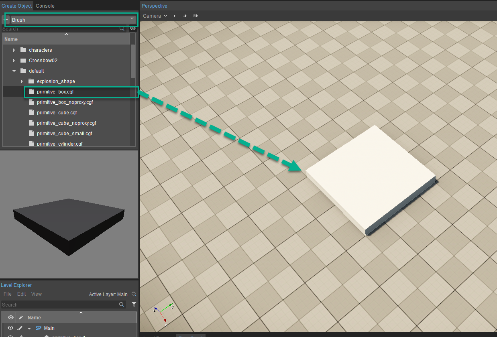
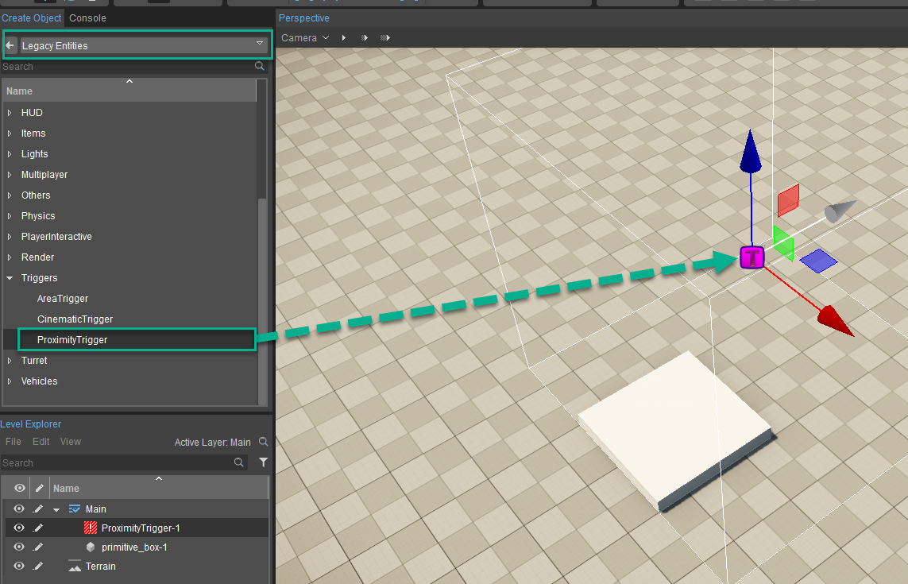
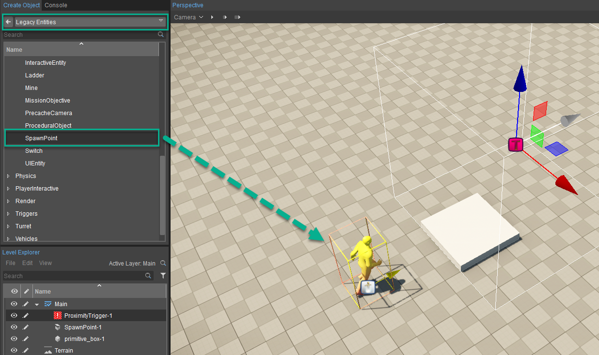
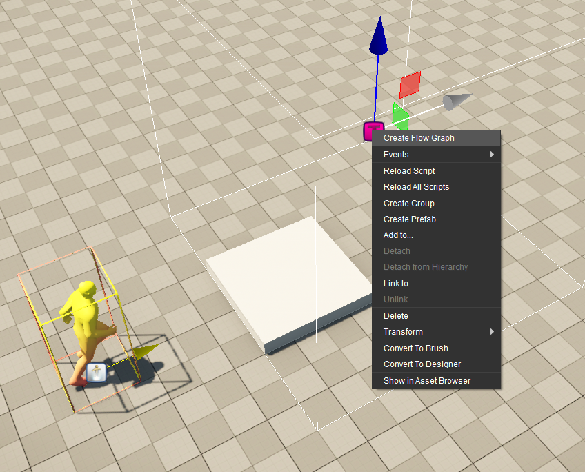
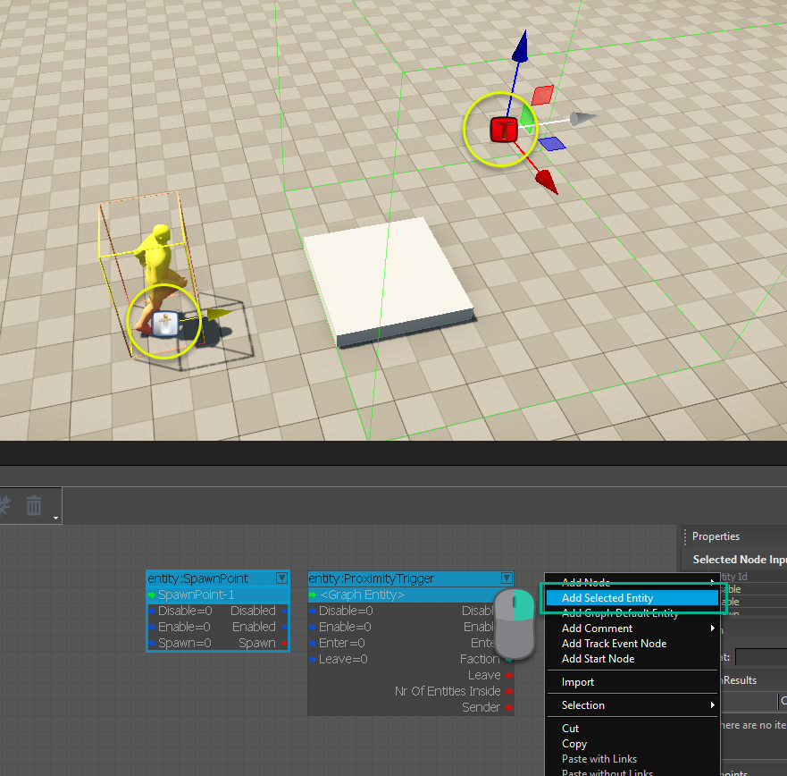
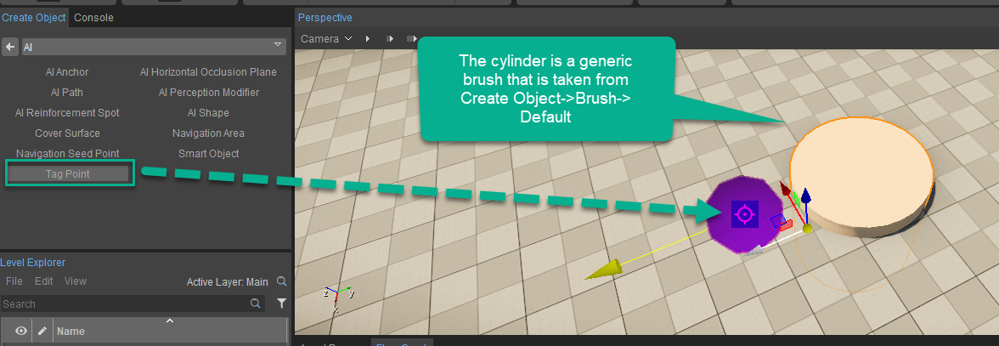
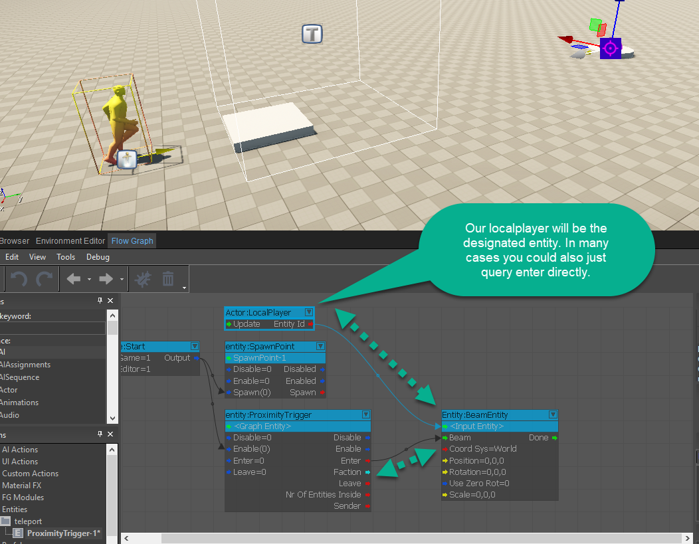
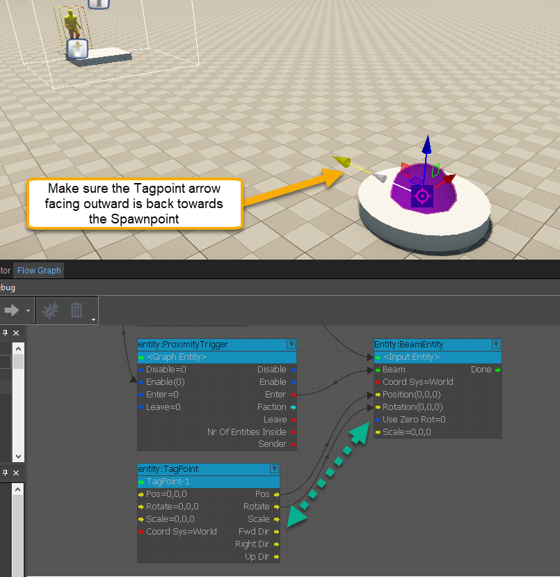
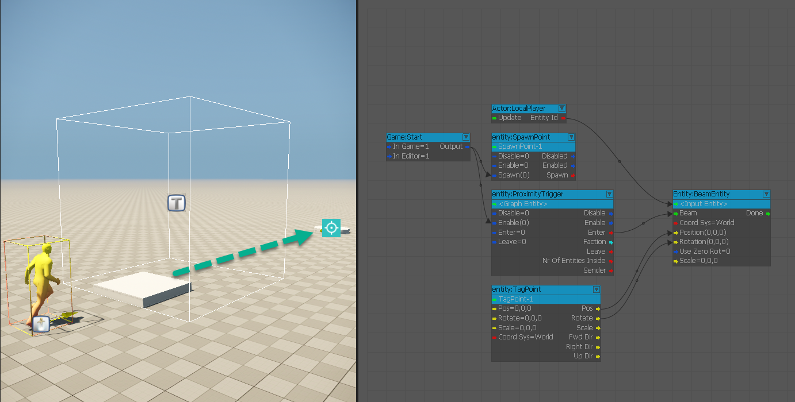

Какая логика необходима для работы телепортации?
Одной из наиболее распространенных форм игрового процесса для развития многопользовательской игры или даже сюжета является возможность телепортироваться из одной точки в другую. Логика этого проста: нам нужно иметь возможность определять границы объекта, в который мы переходим, а затем нам нужно иметь возможность управлять изменением положения игрока, когда мы пересекаем эти границы.
После этого нам нужно будет иметь возможность подвести игрока к определенной точке, в связи с этим мы будем использовать точку тега из раздела AI, чтобы разместить позиционные координаты. Сначала мы рассмотрим отображение основного телепорта, а затем быстро рассмотрим логику, чтобы сделать его многопозиционным для телепортации в обе стороны.
Как создать телепорт
Чтобы создать телепорт, выполните следующие действия:
- Добавьте небольшой квадрат рядом с тем местом, где вы хотите разместить триггер приближения, чтобы вы знали, куда произойдет телепорт, когда вы пересечете границы триггера приближения.
- Добавьте на сцену точку появления и триггер близости. Их можно найти в Создать объект -> Устаревшие объекты.
- Нажмите RMB на триггере приближения и выберите Создать Flow Graph. В этом упражнении мы продолжим именование. gameplayQuickStart.
- Выберите оба объекта в вашей сцене, затем перейдите к Flow Graph и нажмите RMB и выбери Добавить выбранный объект.
- Добавить Цилиндр и Точка тега до уровня. Точка тега находится в Создать объект -> AI -> Точка тега, а Цилиндр — это стандартная кисть, которую можно найти в Создать объект -> Кисть -> Объекты -> По умолчанию -> Cylinder.cgf.
- На следующем шаге мы вернемся к настройке Flow Graph и добавим луч узел сущности. После этого мы можем подключить нашу логику того, когда и куда игрок должен путешествовать. Сначала подключите Войти вывод из Триггер приближения в луч входной порт узла Beam. Для EntityID мы добавили LocalPlayer узел для доступа к игроку только для луча.
- Теперь, подключив балку, мы убедимся, что Желтая стрелка на Точка тега смотрит назад, туда, где мы были. Нажмите на Flow Graph, чтобы Добавить выбранный объект и подключите Позиция и Вращение выходные порты на Сущность луча узел.
- Наконец, зайдите в игру. Вы заметите, что когда вы идете вперед к коробчатой платформе, вас переворачивают и поворачивают назад к исходной точке, сохраняя при этом скорость вперед.
Шаг 1

Шаг 2-1

Шаг 2-2

Шаг 3

Шаг 4

Шаг 5

Шаг 6

Шаг 7

Шаг 8
